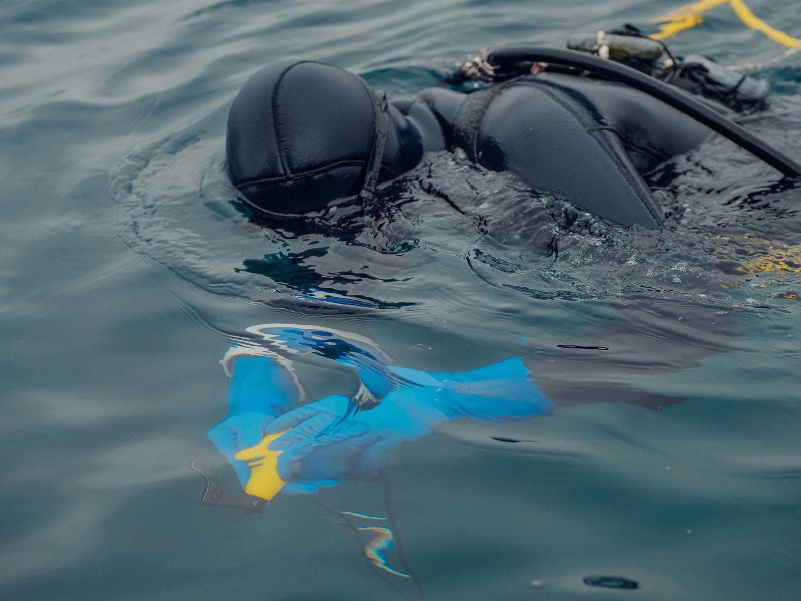
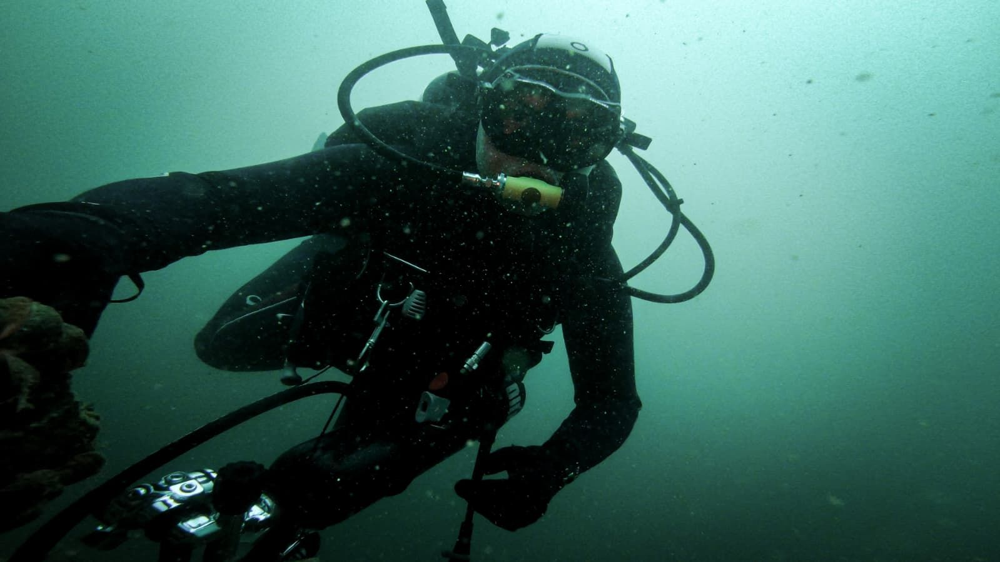

Start / Leistungen / Projektleitung
Projektleitung
Eine Ansprechstelle für alles, was unter Wasser passiert.
Wir übernehmen Planung und Koordination Ihres Unterwasserprojekts und halten Termine, Kosten und Sicherheit im Blick.
Worum es geht
Unterwasserprojekte haben ihre eigenen Regeln.
Arbeiten im Wasser betreffen oft mehrere Stellen gleichzeitig: Bauherrschaft, Ingenieurbüro, Unternehmer, Schifffahrt, Fischerei, Umweltfachstellen und Polizei. Dazu kommen Wetter, Wasserstand und Sicherheitsvorgaben.
Als Projektleiter für den Unterwasserteil sorgen wir dafür, dass diese Fäden zusammenlaufen. Sie haben eine Ansprechperson, die das Fachgebiet kennt und selbst taucht.
Das übernehmen wir
- Abklärung von Machbarkeit, Zugang und Randbedingungen
- Terminplanung abgestimmt auf Wasserstand und Saison
- Sicherheitskonzept für die Taucharbeiten
- Koordination mit Unternehmern und Lieferanten
- Abklärung nötiger Bewilligungen zusammen mit Ihnen
- Kostenkontrolle und Berichterstattung
- Abnahme und Schlussdokumentation
Projektablauf
Klar gegliedert, von Anfang bis Ende
- InitialisierungZiel, Umfang, Beteiligte und Budget festlegen.
- PlanungVorgehen, Termine, Sicherheit und Ressourcen planen.
- VorbereitungMaterial, Partner und Bewilligungen organisieren.
- AusführungArbeiten durchführen, Fortschritt melden, Abweichungen steuern.
- AbschlussAbnahme, Schlussbericht und Übergabe der Dokumentation.
Ihr Vorteil
Warum eine Projektleitung vom Fach
- Fachkenntnis unter WasserRealistische Planung, weil der Projektleiter die Arbeiten selbst kennt.
- Weniger SchnittstellenPlanung, Engineering und Ausführung liegen nahe beieinander.
- TransparenzRegelmässige Information über Stand, Kosten und Risiken.
- Saubere ÜbergabeVollständige Dokumentation für Ihre Akten.

Projekt besprechen
Auch wenn das Vorhaben erst eine Idee ist: Ein frühes Gespräch spart später Zeit und Geld.